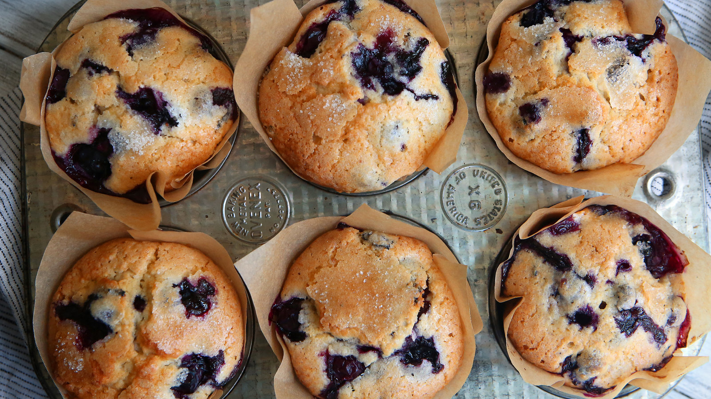

Blueberry Muffins
What do vegan rappers eat when they're craving sweets? These awesome blueberry muffins, of course.

Ingredients
- 1 cup|237 ml coconut milk (can use soy milk)
- 1 teaspoon lemon juice
- 2 cups all-purpose flour
- 2 ½ teaspoons baking powder
- ¼ teaspoon baking soda
- ½ teaspoon black salt (or regular salt)
- ½ cup + 2 tablespoons granulated sugar
- ¼ cup + 2 tablespoons|90 ml coconut oil, liquidated
- 1 teaspoon vanilla extract
- 1 lemon, zested
- 1 ½ to 2 cups fresh blueberries
Instructions
- Heat the oven to 375°F. Line a muffin tin with baking cups and set aside.
- In a small bowl, combine lemon juice and coconut or soy milk. Set aside to allow milk to curdle (curdle effect will be better with soy milk).
- In another bowl, combine flour, baking powder, baking soda, and salt. Set aside.
- In a third large bowl, mix together the sugar, coconut oil, lemon zest, and vanilla extract. Add coconut milk/lemon juice mixture and stir to combine. Gradually mix in dry ingredients until well incorporated, but do not over-mix – a few lumps are okay. Gently fold in the blueberries.
- Spoon mixture into muffin tins, filling each cup about ¾ full. Bake for 20-25 minutes until golden and a knife inserted into the middle comes out clean.
- Remove from heat and allow muffins to cool before removing from pan.